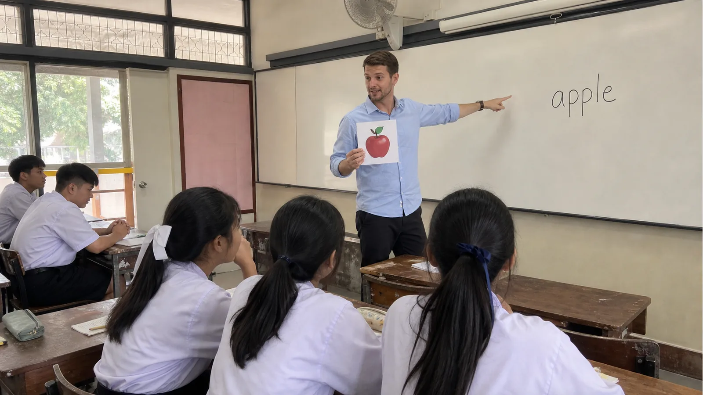

Teaching for the first time can feel exciting and nervous at the same time. If you are planning to teach in Thailand, you may wonder what the classroom will be like, how students will respond, and how to prepare yourself.
The good news is that many first-time teachers grow quickly once they begin. With the right attitude and support, teaching in Thailand can become a rewarding and memorable experience.
1. You Do Not Need to Be Perfect
Many new teachers worry too much about being perfect. In reality, students do not expect perfection. They respond best to teachers who are kind, prepared, patient, and willing to help them learn.
It is normal to make mistakes in your first few classes. Every lesson helps you improve.
2. Simple Instructions Work Best
When teaching English as a second language, clear and simple instructions are very important. Use short classroom phrases such as "Listen and repeat," "Work with a partner," "Open your book," and "Write the answer."
Using gestures, pictures, and examples can also help students understand more easily.

3. Thai Students Enjoy Fun Activities
Many Thai students enjoy lessons that include games, movement, songs, pictures, and group activities. A fun classroom helps students feel more comfortable using English.
When students are relaxed, they are more willing to speak and participate.
4. Build Good Relationships
Smiling, learning students' names, praising effort, and showing patience can make a big difference. Students are more likely to participate when they feel safe and supported.
Good relationships are one of the most important parts of successful teaching.
The Bottom Line
Teaching in Thailand for the first time is a journey of learning, growth, and discovery. Your students do not need you to be perfect. They need you to show up, care, and help them enjoy learning English.
Ready to begin your teaching journey in Thailand? MediaKids Academy is here to support you every step of the way.
Ready to Start Your Teaching Journey?
Join MediaKids Academy and start your teaching journey in Thailand with support from our team.
Apply Now